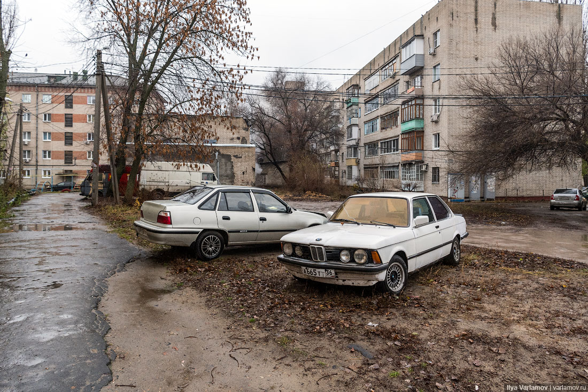

Срочная служба
Название группы берет свои истоки из места проживания Юрия Клинских - Левобережного района г. Воронеж, который местные
жители из-за выброса газов с местных заводов так и прозвали "Сектор газа".
В этом районе находился рок-клуб, где и зарождалась карьера перспективного, но на тот момент малоизвестного исполнителя
В этом районе находился рок-клуб, где и зарождалась карьера перспективного, но на тот момент малоизвестного исполнителя
Ну, это чисто такое местное название в Воронеже, где был рок-клуб, к которому мы принадлежали. Он находился в очень задымлённом районе, и я его так прозвал — «Сектор газа», и мы в этом клубе постоянно играли, а так как я жил там неподалёку в этом районе, группу я назвал так же — «Сектор Газа». Чисто местное название, я ведь не думал тогда, что мы так раскрутимся, я думал, что мы поиграемся и на этом всё закончится, как и многие коллективы, тогда первые в 85—87 году, когда открылись рок-клубы, вы помните, было очень много команд довольно-таки интересных…
Юрий Клинских